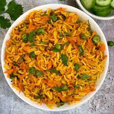

Jollof Rice

Jollof or jollof rice is a rice dish from West Africa. The dish is typically made with long-grain rice, tomatoes, onions, spices, vegetables and meat in a single pot, although its ingredients and preparation methods vary across different regions.
Ingredients
- 1 1/2 Cups Organic Long Grain White Rice
- 1/2 Teaspoon Ground Dawadawa
- 1/2 Cup Onion, small dice
- 1 Cup Tomato, medium dice
- 2 1/2 Cups Water
- 3 Tablespoons Canned Crushed Tomato
- 4 Teaspoon Red Thai Chile Powder
- 1 Tablespoon Ginger, peeled, chopped
- 1 Tablespoon Vegetable Oil
- Kosher Salt And Ground Pepper
Steps
- In a medium skillet, add one tablespoon of vegetable oil on medium heat.
Add the onions and saute until golden brown, stirring often.
Remove from heat, and place in the bowl of a blender with the diced
and crushed tomato, thai chili powder and ginger.
Puree with a few tablespoons of water until smooth.
- In a medium sauce pot, add the water, rice, tomato puree and dawadawa powder.
Stir well and bring to a boil. Turn the heat down to a simmer, and cook
for another 20 minutes, covered,
until rice is cooked through. Remove from heat, and let sit for 10 minutes,
then fluff with a fork.